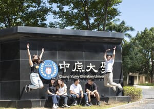
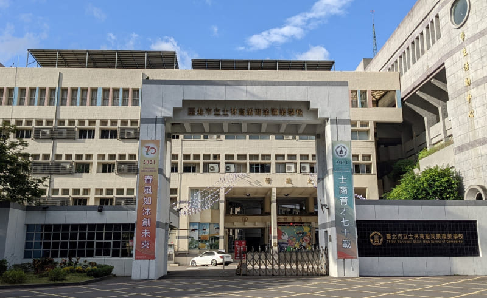
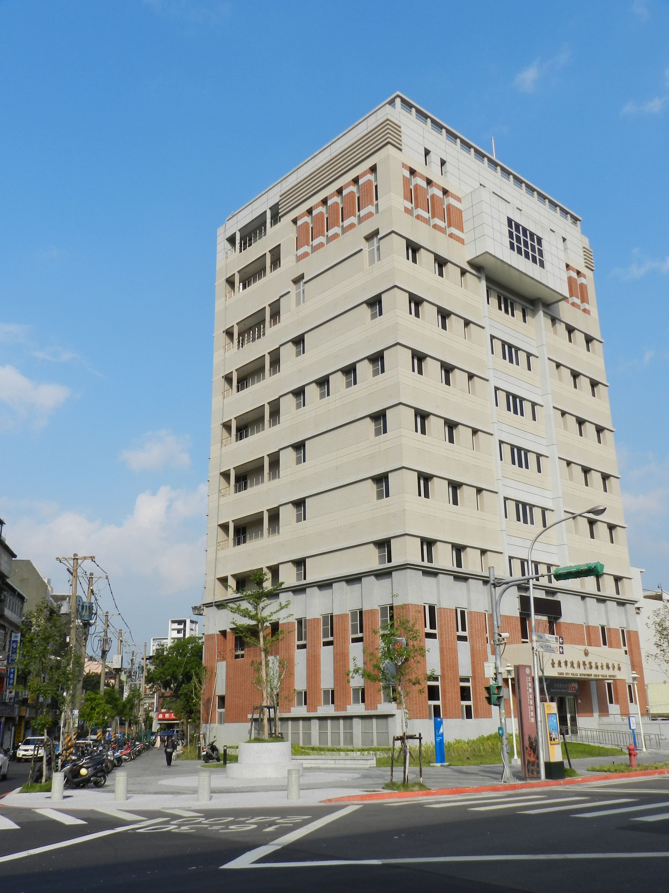
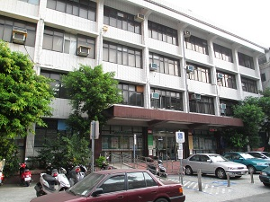
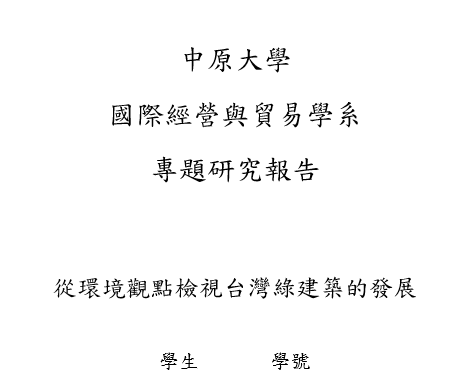
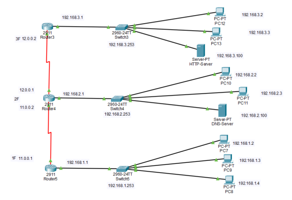

打遊戲
我喜歡模擬交通建設類型的遊戲，不僅能夠建設城市，也能思考規劃與管理
我是許煥崙，來自台北市，因為覺得國貿系學的不夠深入所以來輔修資管系。
2022-2026

2019-2022

檔案管理工讀生
JUL.2024 - AUG.2024
在警察局實習期間，主要負責文件的整理與編號， 協助建立有系統的檔案管理流程，提升了資料檢索 的效率。透過處理各類案件文件，我對社會治安問 題有了更深入的了解，尤其是詐騙案件的多樣性與 複雜性，讓我意識到細心與保密在公務處理中的重 要性，也培養了我對行政作業的責任感與專業態度。
檔案管理工讀生及收文櫃台人員
JUL.2023 - AUG.2023
這是我第一份正式工作，於暑假期間在稅捐處的檔案室 實習，主要負責每日送達的民眾申請書與各類文件的編 目與歸檔。每日平均需處理約200件資料，工作量大且 講求準確性，使我在短時間內培養出良好的時間管理能 力與高度的細心度。此外，我有時也會代理收文櫃台的 業務，協助民眾文件的收件登記、資料確認及開立收據 等，讓我熟悉了公部門行政流程與基本的對外溝通方式。 這段經驗不僅提升了我的行政處理能力，也讓我更明白公部門在服務民眾時對效率與正確性的高度要求。面對繁瑣且大量的文件處理工作，我學會了如何在壓力下保持穩定的節奏，並將每一項細節都處理得妥當，是我進入職場後非常寶貴的一次學習與成長機會。
用教育連結學生與科技 打造創新與成長的無限可能
DEC. 4 2024
在大三修習輔系資管的「資訊管理」課程中，我參與了一項跨系所、 跨年級的服務學習計畫。我們小組成員來自不同背景，為了回應資訊 時代對數位素養與學習歷程檔案的重視，共同設計並舉辦了一場面向 高中生的教學活動，內容包括基礎的 HTML 與 CSS 架構介紹，以及 如何運用 AI 工具協助製作個人網頁。透過實地教學與互動，我們不 僅累積了寶貴的實務經驗，更培養了團隊合作與溝通能力。這次活動 有效促進了高中生對資訊技能的理解與應用，達成知識分享與教育資 源普及的目標，也激發了我們對未來投入志工服務與教育推廣的熱情。
綠建築 不只是環保 更是企業永續的投資
NOV. 2024-Present
在全球氣候變遷與永續發展逐漸受到重視的背景下，綠建築成為建築產業與企業實踐ESG的關鍵策略， 亦關注綠建築如何不僅止於環境節能的功能，更具備影響企業形象、提升品牌信任度與吸引綠色投資的潛力。 在這次專題的研究過程中，我們深刻體認到綠建築並非單純關乎建材或節能技術，更是一種跨領域的永續實踐。 從環境面來看，它是對自然資源的尊重與有效利用；從社會面來看，它改善使用者的生活品質、強調健康與安全 ；而在治理面，則體現企業的永續理念與負責任的決策態度。 過去我們對綠建築的印象，多半停留在「看起來很環保」、「多種綠植物」這類表面認知，但透過本專題的研究 與資料分析，我們理解到綠建築背後蘊含的是一種系統性思維，也是一種將ESG融入建築設計、企業策略與政策規劃的過程。 這樣的經驗不僅拓展了我們對永續發展的理解，也讓我們思考身為未來職場工作者，在不同領域中如何實踐ESG理念，推動企 業及社會向更綠色、更公平、更有韌性的方向發展。

連結知識 連結網路
FEB.2024-JUN.2024
這是我在大二時修習企業資料通訊課程的期末專題。當時的專題核心在於模擬實際企業環境中的網路配置。 我們從基本的網路拓撲設計開始，依據不同部門的需求進行IP規劃、VLAN設定、交換器與路由器的配置，甚至模擬網路安全防護機制。 雖然一開始對這些專業術語和操作流程感到陌生，但隨著不斷嘗試與實作，我逐漸理解背後的邏輯與架構，並發現自己其實對網路配置非常感興趣。 這次經驗不僅讓我學會了許多實用的網路技術，也激發了我深入了解電腦網路的動機。 過程中，我開始思考網路如何在企業中發揮關鍵作用，以及如何透過有效的配置提升效率與安全性。 對我來說，這不再只是完成一個課堂作業，而是一個打開新興趣領域的契機。未來我也希望能有更多機會，進一步鑽研與實踐網路相關的知識。
